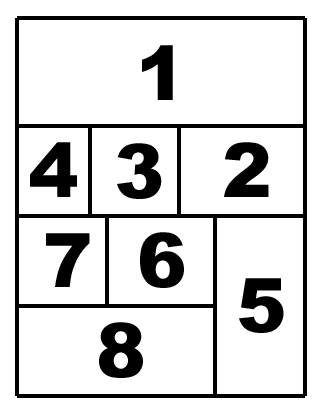

I MANGA
Kinds of anime and manga

There are different types of short stories, and according to these they are grouped in different groups:
Light novels, web novels, manga (Japan) and manwa (Korea).
We can also find subgroups that are divided by genre:
Kodomo - anime and manga for children
Shonen - for boys
Shojo - for girls
Majokko - shojo with wizards
Seinen - for mature boys
Josei - shojo for mature girls
Yaoi / Yuri - homoerotic explicitly sexual content, in the first case male and in the second case female.
Ecchi - fairly light erotic elements.
Hentai - sometimes uncensored sexual elements
Romantic Comedy - as the name implies these are romantic comedies.
Mecha - fights between giant robots
Spokon - a work about a sport.
Isekai - a work in which the protagonist is catapulted into another world.
Comics or manga?

Japanese manga are the equivalent of comic books in the West, the only difference is that they are produced in Japan and are drawn with a particular technique. You may have thought of comics like Bat Man or the Avengers but we are talking about two different things, but for now, let's focus on their history.
La storia

The term manga (漫画) literally means derisive images and in Japan identifies all drawings made in the form of comic strips. Its origin dates back to the 18th century and is exemplified in the illustration book Shiji no yukikai by Santo Kyoden and in Hyakujo by Aikawa Minwa: We are in the middle of the Edo period, in a context with a strong traditionalist component. The first to use the term manga to define some of his productions was, however, the famous artist Hokusai, who lived between 1760 and 1849. Note: Manga is not the only word used in Japan to indicate comics, although it is the most commonly used: there are also toba-e and ponchi-e.
How to read a manga?
 The content of manga, before being published in the latter, is presented in volumes of about 200 pages called tankōbon. Some examples are Weekly Shounen Jump and Shonen Magazine. It is very important to know that manga, unlike western comics, should be read from right to left, including the panels (vignettes), which should be read as in the picture opposite.